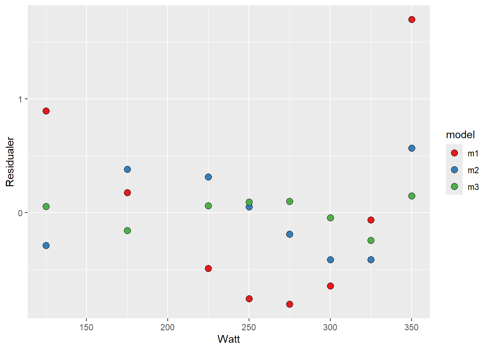
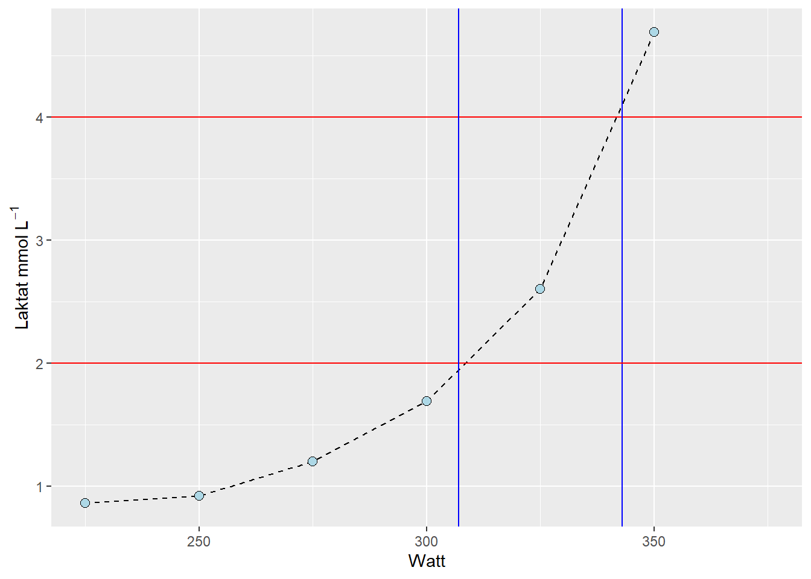
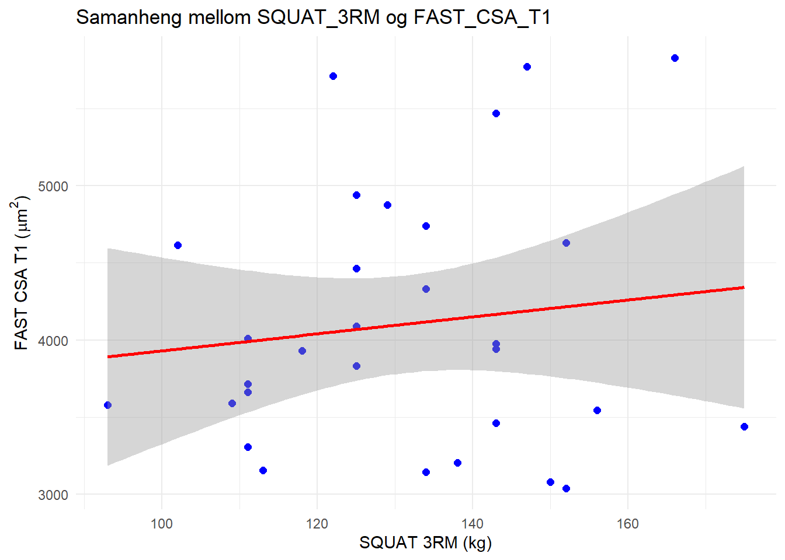

2 Regresjonsmodellar
2.1 Introduksjon
Hensikten med denne rapporten er å predikere data ved hjelp av regresjon gjort i Rstudio, samt tolke en regresjonstabell. Rapporten inneholder tre deler. Ved å bestemme laktatterskel ved blodlaktatverdiene 2 og 4 mmol L-1 analyserer vi forholdet mellom prestasjon i watt og treningsintensitet. Vi analyserte hellningen til en qPCR kalibreringskurve, og tolket en regresjonstabell om forholdet mellom 3RM squat og tverrsnittsareal til type II muskelfibrer.
2.2 Metode
2.2.1 Del 1: Predikert laktatterskel
I del 1 av rapporten ble datasettet cyclingstudy fra (Sylta et al. 2016) brukt til å predikere to bestemte blodlaktatterskler ved 2 og 4 mmol L-1 ved bruk av ein tredjegradspolynom modell. Det blei testa ut fire modellar for estimering av blodlaktatteskel til ID10, ein rett linje modell, andregradspolynom, tredjegradspolynom. Behandlingen av dataen ble gjort i (R Core Team 2021).
2.2.2 Del 2: Predikert hellning på qPCR kalibreringskurve
I del 2 av rapporten har vi ved hjelp av (Schindelin et al. 2012) analysert et bilde av qPCR som ble hentet fram fra forsøket (“Login - eLabFTW — Elab.inn.no”). Analysen av bildet gav oss data som vi anvendte i (R Core Team 2021) for å predikere hellningen til qPCR kalibreringskurven.
2.2.3 Del 3: Tolke en regresjonstabell
I del 3 av rapporten har vi gjort en statistisk analyse av forholdet mellom “Type II (FAST) fibers cross sectional area (micrometer2)” ved baseline (FAST_CSA_T1) og “Squat 3 repetition maximum load (kg)” ved baseline (SQUAT_3RM) fra datasettet til (Haun et al. 2018) og (Haun et al. 2019) for å undersøke om det var et linjert forhold.
2.3 Resultat
2.3.1 Del 1: Predikert laktatterskel
Vi fant ut at tredjegradspolynom (m3) var den beste modellen for å estimere laktatverdiar mot ein rett linje modell(m1) og ein andregradspolynom (m2) (sjå Figure 2.1), då residuala frå denne modellen varierte minst frå observerte verdiar.

Vi har kalkulert blodlaktatterskel ved 4mmol L-1 til å vere 343 watt, og blodlaktatterskel ved 2mmol L-1 til å være 307 watt for subject “10” ved timepoint “pre” (sjå Figure 2.2).
2.3.2 Del 2: Predikert hellning på qPCR kalibreringskurve

Kalibreringsmodellen beskriver forholdet mellom avstand og molekylvekt. Etter log-transformering av molekylvekten, blir forholdet mellom avstand og molekylvekt tilnærmet lineært, noe som gjør den lineære regresjonsmodellen passende. R-kvadratverdien på 0.98 indikerer hvor godt modellen passer til dataene da den er tilnærmet 1. De forutsagte molekylvektene for de ukjente prøvene er basert på den tilpassede kalibreringsmodellen. Predikasjonene for de ukjente prøvene gir et estimat av deres molekylvekt basert på deres migrasjonsavstand i gelen. QQ-plottet forteller oss om forskjellene mellom observert og predikert molekylvekt følger en normalfordeling. Ideelt sett bør punktene i QQ-plottet falle langs referanselinjen noe de tilsynelatende gjør. Det vil si at modellen er godt spesifisert, og fanger forholdet mellom migrasjonsavstand og molekylvekt.
2.3.3 Del 3: Tolke en regresjonstabell

Resultata viser ingen samanheng mellom SQUAT_3RM og FAST_CSA_T1 (Estimat = 5,483µm2, SE = 8,032, t = 0,683, p = 0,50), sjå Figure 2.3.
2.4 Diskusjon
2.4.1 Diskusjon - del 1
Rapporten viser hvordan man kan kalkulere seg fram til wattbelastning på sykkel ved bestemte laktatverdier på 2 og 4 mmol L-1 som beskriver intensiteten. Vi kom fram til at terskelwatten ved 2 mmol L-1 var 307, og at terskelwatten ved 4mmol L-1 var 343 for subject “10” ved timepoint “pre”. Berekninga blei gjort ved bruk av tredjegradspolynomial modell då estimata frå denne passa betre enn ein linjer modell og ein andregradspolynomial modell. Tredjegradspolynomial modell har tidligare blitt bevist å vere god for å estimere ein laktatprofil kurve (Newell et al. 2007).
2.4.2 Diskusjon - del 2
Kalibreringsmodellen viser seg å være effektiv til å beskrive forholdet mellom avstand og molekylvekt, spesielt etter at molekylvekten ble log-transformert. Denne transformasjonen bidro til å gjøre forholdet tilnærmet lineær, noe som bekrefter at en lineær regresjonsmodell er en passende tilnærming. Med en R-kvadratverdi på 0.98 ser vi at modellen gir en nesten perfekt tilpasning til dataene, som styrer modellens prediksjonsnøyaktighet. For de ukjente prøvene baseres prediksjonene av molekylvekt på modellen og gir troverdige estimater basert på migrasjonsavstand i gelen. QQ-plottet støtter også modellens robusthet, ettersom punktene faller nær referanselinjen, som indikerer at restene følger en normalfordeling. Dette antyder at modellen er godt spesifisert og gir en pålitelig beskrivelse av sammenhengen mellom migrasjonsavstand og molekylvekt. Samlet bekrefter resultatene at den utviklede modellen fanger opp de sentrale aspektene ved dataene på en god måte.
2.4.3 Diskusjon - del 3
Resutlata visar ingen samanheng mellom FAST_CSA_T1 og SQUAT_3RM (Estimat = 5,483µm2, SE = 8,032, t = 0,683, p = 0,50). SE forklarer kor mykje gjennomsnittet frå vårt utvalg forventas å avvike frå det sanne gjennomsnittet i populasjonen (Sport, Tanner, and Gore 2012). P-verdien her tilsier at vi vil sjå eit likt eller meir ekstremt resultat i 50% av tilfellene om vi repiterer studien gitt at nullhypotesen er sann (Sport, Tanner, and Gore 2012). T-verdien er lav og indikerer at differansen mellom gjennomsnittet i dataen og gjennomsnittet i populasjonen sannsynligvis er liten (Sport, Tanner, and Gore 2012). Den lave t-verdien ilag med den høge p-verdien indikerar at det ikkje er grunnalag for å sei at det er statistisk signifikant (Sport, Tanner, and Gore 2012). Oppsumert ser vi at det ikke er noe grunnlag for å sei at det er ein signifikant sammenheng mellom økning i kilo i SQUAT_3RM og økning i µm2 i FAST_CSA_T1.
2.5 Referanser
Haun, Cody T, Christopher G Vann, C Brooks Mobley, Shelby C Osburn, Petey W Mumford, Paul A Roberson, Matthew A Romero, et al. 2019. “Pre-Training Skeletal Muscle Fiber Size and Predominant Fiber Type Best Predict Hypertrophic Responses to 6 Weeks of Resistance Training in Previously Trained Young Men.” Front. Physiol. 10 (March): 297.
Haun, Cody T, Christopher G Vann, Christopher B Mobley, Paul A Roberson, Shelby C Osburn, Hudson M Holmes, Petey M Mumford, et al. 2018. “Effects of Graded Whey Supplementation During Extreme-Volume Resistance Training.” Front. Nutr. 5 (September): 84.
“Login - eLabFTW — Elab.inn.no.” https://elab.inn.no/experiments.php?mode=view&id=83.
Newell, John, David Higgins, Niall Madden, James Cruickshank, Jochen Einbeck, Kenny McMillan, and Roddy McDonald. 2007. “Software for Calculating Blood Lactate Endurance Markers.” J. Sports Sci. 25 (12): 1403–9.
R Core Team. 2021. R: A Language and Environment for Statistical Computing. Vienna, Austria: R Foundation for Statistical Computing. https://www.R-project.org/.
Schindelin, Johannes, Ignacio Arganda-Carreras, Erwin Frise, Verena Kaynig, Mark Longair, Tobias Pietzsch, Stephan Preibisch, et al. 2012. “Fiji: An Open-Source Platform for Biological-Image Analysis.” Nat. Methods 9 (7): 676–82.
Sport, A I, R Tanner, and C Gore. 2012. Physiological Tests for Elite Athletes 2nd Edition. Human Kinetics Publishers.
Sylta, Øystein, Espen Tønnessen, Daniel Hammarström, Jørgen Danielsen, Knut Skovereng, Troels Ravn, Bent R Rønnestad, Øyvind Sandbakk, and Stephen Seiler. 2016. “The Effect of Different High-Intensity Periodization Models on Endurance Adaptations.” Med. Sci. Sports Exerc. 48 (11): 2165–74.